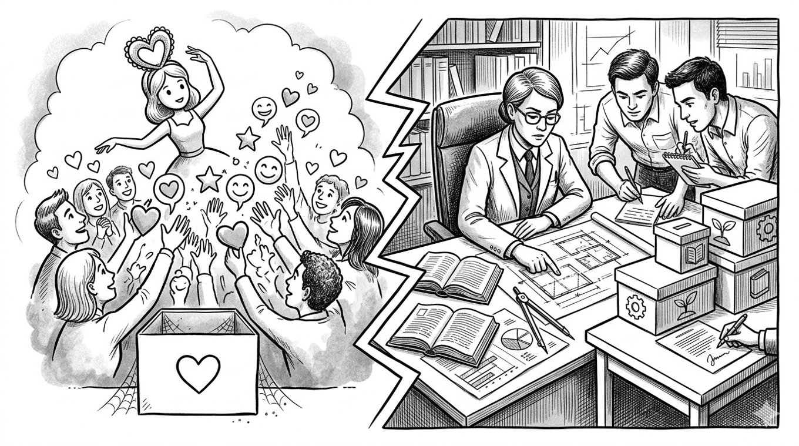

“ファン化”の誤変換で、あなたは売れなくなる。

どーも！とーるです！
今回のテーマは「ファン化集客」。
ちょこちょこ僕もコラムで話題にしているお話です。
昨今、SNSを開けばこの言葉を聞かない日はありません。
「まずはファンを作れ」「好かれる発信をしろ」「共感こそが正義だ」。
これさえできれば、あなたの商品は飛ぶように売れる……。
そう信じて、今日も一生懸命、自撮りをアップし、おしゃれなライフスタイルを共有し、フォロワーに「いいね！」を押し続けているあなた。
はっきり言います。
その「ファン化」、致命的な誤変換を起こしています。
「ファンは増えたのに、売上はサッパリ」「オフ会には人が来るのに、本命の商品を募集するとシーンとする」。
もしあなたが今、そんな「ファン化の沼」にハマっているなら、今回のコラムはあなたのビジネスを救う特効薬になる思います。
なぜ、あなたの「ファン」は商品を買ってくれないのか。そのエグい真実を、お話していきますね。
なぜ「好き」だけでは、あなたの商品は1円も売れないのか
まず、僕たちの脳内で起きている致命的な計算違いを整理しましょう。
それは、「ファンであること」と「購買意欲があること」は、全く別の話であるということです。
わかりやすく、僕の過去の話をします。
僕は昔、深キョン（深田恭子さん）が大好きでした。
それはもう、画面越しに「可愛いなぁ」と見惚れるレベル。
いわゆるファンというやつですね。
でも、冷静になって振り返ってみてください。
彼女がカレンダーを出しても、写真集を出しても、映画のDVDが出ても、僕は一度も、自分のお金でそれを購入したことはありません。
なぜか？
答えはシンプルです。
ファンではあるけれど、僕の人生に「彼女の写真集」という解決策を必要とする「悩み」がなかったからです。
僕は彼女のビジュアルに癒やされてはいましたが、自分の生活を劇的に変えたり、具体的な問題を解決したりするために、彼女の商品を必要とはしていませんでした。
SNSでも全く同じことが起きています。
「投稿が面白い」「人柄が好き」「ライフスタイルに憧れる」。
そう思ってファンになってくれたフォロワーは、あなたの「癒やし」や「エンタメ」としてのファンであって、あなたの提供する「解決策」としてのファンではないんです。
そこに「この人の商品を買いたい」という"購買意欲"がなければ、いいね！やコメントはついても、売上は0です。
「好きな人」ではなく「尊敬される専門家」を目指せ
ここで多くの人が勘違いをするのが、「好き」と「尊敬・憧れ」の混同です。
今のSNS時代、「共感」が重視されるあまり、「親近感」ばかりを追求して「好きな人」になろうとする発信が溢れています。
でも、ビジネスで選ばれるのは「好きな人」ではありません。
ここで、あなたが目指すべき「専門家型」と、失敗しやすい「アイドル型」の違いを文章で解説します。
魅力の源泉の違い
「好きな人（アイドル型）」は、あなたの人柄や見た目、日常のキラキラ感に惹かれています。
「この人の考え方、素敵だな」という親近感がベースです。
対して「尊敬される人（専門家型）」は、あなたの実績、知識、そして「問題解決能力」に惹かれています。
「この人は本物だ」という、プロとしての背中が魅力の源泉です。
顧客心理の違い
「好きな人」に対して、お客さんは「見ていたい」「応援したい」「癒やされたい」と思います。
しかし、「尊敬される人」に対しては、「この人に頼めば、私の悩みが消える」「この人みたいになりたい」という、自分の未来を変えてほしいという欲求を持ちます。
購買動機の違い
「好きな人」から買うのは、お布施や投げ銭、あるいは「同じものを持っていたい」という記念品購入の感覚です。
一方で「尊敬される人」から買うのは、「投資」です。
「このお金を払えば、自分の課題が解決する」という確信があるから、財布を開くんです。
顧客は、あなたの「日常」に惚れるんじゃなく、あなたの「専門性と実績（リターン）」に惚れるべきなんです。
この再変換ができない限り、あなたのファンはいつまでも「深キョンのカレンダーを買わない僕」のままです。
実際、「好き」という感情だけで商品を売っている方は多くいます。
でも、彼ら彼女らの多くが1〜2年で消えていくのを見たことがありませんか？
「好き」という感情は、鮮度が命です。
人間は新しい刺激、もっと魅力的な「好きな人」が現れた瞬間、意識はそちらに移ります。
「あの人もいいけど、最近見つけた〇〇さんの方が、もっと共感できる！」
感情は移ろいやすく、飽きやすい。
そこに「この人じゃないと解決できない」という尊敬（実力）が伴っていないビジネスは、あっという間に終わりを迎えます。
新陳代謝の激しいSNS界隈では、あっという間に賞味期限が切れてしまいます。
実力のない「アイドル型」は、常に新しい刺激を提供し続けなければならず、いつか疲弊します。
一方、尊敬をベースにした「専門家型」は、感情の移ろいに左右されません。
「私の悩みを解決できるのは、この人しかいない」という信頼関係は、そう簡単には崩れないからです。
ここが、海外のマーケティング論を鵜呑みにしてはいけない、最も重要な部分です。
海外、特にチップ文化がある国では「好き」というだけでお金が動きます。
「面白いからチップを投げる」という「贈与規範」が文化に根付いているからです。
しかし、日本は違います。
日本における「好き」や「共感」は、多くの場合「無料で楽しませてもらうもの」として消費されます。
「有益な情報をくれたから、お返しに商品を買おう」という道徳的な義務感は、日本人の脳にはほとんど搭載されていません。
無料のギブは「ラッキーなもらい物」として消費されて終わりです。
日本では「対価としての価値（市場規範）」を提示し、尊敬をベースにした取引を行わなければ、ビジネスとして成立しないんです。
「10万円払ったら、あなたはこうなれます」という提示に対し、顧客が「あなたの実力に尊敬」を感じたとき、初めて財布が開きます。
ファン化とは、単に好かれることではありません。
「あなたの専門性と実績に惚れ込み、この人なら私の未来を変えてくれると確信してもらうこと」です。
自撮りをアップするのを一度やめて、目の前の顧客の悩みを解決する情報発信に集中してください。
「癒やし」ではなく「未来」を提示してください。
アイドルを目指すのは、もうやめましょう。
１年後の黒歴史になりますよ。
あなたは、顧客の人生を救う「最強の助っ人（専門家）」として、そのステージに立つべきです。
なんつて
とーる｜行動経済アナリスト